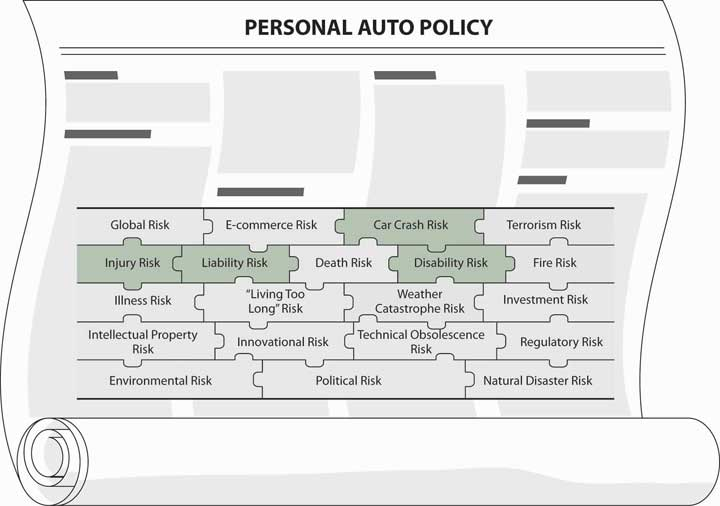

Automobiles are an essential part of American society. In the beginning of the new millennium, there were approximately 156 million cars, vans, trucks, and sport-utility vehicles insured in the United States. The expenditures for auto insurance have declined in recent years, as shown in Table 14.1 "Average Expenditures on Auto Insurance, United States, 1997–2006". Factors contributing to the decrease are safer cars, better safety devices, and less fraud and theft. These factors are somewhat diminished by overall increases in litigation and medical costs, as indicated in the private passenger auto insurance losses of Table 14.2 "Auto Insurance Claims Frequency and Severity for Bodily Injury, Property Damage, Collision, and Comprehensive, 1998–2007"Insurance Information Institute (III), The Insurance Fact Book, 2009, 57, 62; http://www.iii.org/media/facts/statsbyissue/auto/ (accessed March 21, 2009).
Table 14.1 Average Expenditures on Auto Insurance, United States, 1997–2006
| Year | Average Expenditure | Percentage Change | Year | Average Expenditure | Percentage Change |
|---|---|---|---|---|---|
| 1997 | $705 | 2.0% | 2002 | $786 | 8.3% |
| 1998 | $703 | −0.3 | 2003 | $830 | 5.6 |
| 1999 | $685 | −2.6 | 2004 | $842 | 1.4 |
| 2000 | $690 | 0.7 | 2005 | $831 | −1.3 |
| 2001 | $726 | 5.2 | 2006 | $817 | −1.7 |
Source: © 2007 National Association of Insurance Commissioners.
Source: Insurance Information Institute (III), accessed March 21, 2009, http://www.iii.org.
According to the U.S. Department of Transportation’s National Highway Traffic Safety Administration, an auto accident death occurs, on average, every twelve minutes, and an injury occurs every eleven seconds. Vehicle occupants accounted for 74 percent of traffic deaths in 2007.Insurance Information Institute (III), The Insurance Fact Book, 2009, 136–137.
Drunk driving (driving while intoxicated [DWI] or driving under the influence [DUI]) contributes dramatically to fatalities on the road. In 2007, 12,998 traffic deaths were related to drunk driving. Most states have DWI or DUI laws that include lower blood-alcohol level tolerances for drivers under the age of twenty-one.Insurance Information Institute (III), The Insurance Fact Book, 2009, 72–74.
Table 14.2 Auto Insurance Claims Frequency and Severity for Bodily Injury, Property Damage, Collision, and Comprehensive, 1998–2007
| Liability | ||||
|---|---|---|---|---|
| Bodily InjuryExcludes Massachusetts and most states with no-fault automobile insurance laws. | Property DamageExcludes Massachusetts, Michigan, and New Jersey. | |||
| Year | Claim FrequencyClaim Frequency is claims per one hundred earned car years. A car year is equal to 365 days of insured coverage for a single vehicle. | Claim SeverityIncludes loss adjustment expenses. | Claim FrequencyClaim frequency is claims per one hundred earned car years. A car year is equal to 365 days of insured coverage for a single vehicle. | Claim SeverityClaim severity is the size of the loss measured by the average amount paid for each claim. |
| 1998 | 1.26 | $9,437 | 3.97 | $2,240 |
| 1999 | 1.23 | 9,646 | 4.00 | 2,294 |
| 2000 | 1.20 | 9,807 | 3.98 | 2,393 |
| 2001 | 1.16 | 10,149 | 3.97 | 2,471 |
| 2002 | 1.15 | 10,400 | 3.92 | 2,552 |
| 2003 | 1.16 | 10,662 | 3.87 | 2,606 |
| 2004 | 1.14 | 11,079 | 3.78 | 2,624 |
| 2005 | 1.10 | 11,423 | 3.67 | 2,693 |
| 2006 | 1.03 | 12,020 | 3.49 | 2,811 |
| 2007 | 1.00 | 12,296 | 3.54 | 2,869 |
| Physical DamageExcludes Massachusetts, Michigan, and Puerto Rico. Based on coverage with a $500 deductible. | ||||
| Collision | ComprehensiveExcludes wind and water losses. | |||
| Year | Claim FrequencyClaim frequency is claims per one hundred earned car years. A car year is equal to 365 days of insured coverage for a single vehicle. | Claim SeverityClaim severity is the size of the loss measured by the average amount paid for each claim. | Claim FrequencyClaim frequency is claims per one hundred earned car years. A car year is equal to 365 days of insured coverage for a single vehicle. | Claim SeverityClaim severity is the size of the loss measured by the average amount paid for each claim. |
| 1998 | 5.39 | $2,273 | 2.93 | $1,078 |
| 1999 | 5.73 | 2,352 | 2.80 | 1,116 |
| 2000 | 5.61 | 2,480 | 2.89 | 1,125 |
| 2001 | 5.53 | 2,525 | 3.11 | 1,152 |
| 2002 | 5.48 | 2,728 | 2.91 | 1,250 |
| 2003 | 5.17 | 2,919 | 2.75 | 1,331 |
| 2004 | 4.88 | 3,073 | 2.45 | 1,420 |
| 2005 | 5.05 | 3,062 | 2.37 | 1,456 |
| 2006 | 4.88 | 3,189 | 2.39 | 1,529 |
| 2007 | 5.14 | 3,131 | 2.46 | 1,519 |
| Source: ISO. | ||||
| * For all limits combined. Data are for paid claims. | ||||
Source: “Automobile Insurance Overview,” Insurance Information Institute, accessed March 21, 2009, http://www.iii.org/media/facts/statsbyissue/auto/.
To alleviate the economic risk of getting hurt or hurting someone else in an automobile accident, the law in most states requires automobile owners to buy automobile insurance. In this chapter we will learn about the following:
At this point in our study, we are still in the realm of different types of personal lines coverages. As with the homeowners policy, the automobile policy combines both property and liability coverage in one package. The liability part is now at the front of the policy rather than the property part, as is the case in the homeowners policy.
As part of our holistic risk management, we need to be sure that when we are on the road we are covered. If we hurt anyone, we may be sued for every penny we and our parents ever earned. If we get hurt or damage our own cars, we may not be able to get to work, or we may be out of work for a long time. As you saw in the statistics above, car accidents do occur and no one is immune to them.
Figure 14.1 Links between Holistic Risk Pieces and Auto Policies
The personal auto line prices are not increasing as quickly as in the beginning of the new millennium. Of course, the premium level for each driver depends on the specific pricing factors for private passenger automobiles such as location, classification, car make, and so forth. Regardless of your individual rating factors, you know by now that external market conditions affect your risk management decision (as you saw in Chapter 8 "Insurance Markets and Regulation"). When rates are high, for example, you may decide to use higher deductibles for your automobile coverage.
In addition to understanding how the market conditions affect our risk management decision in the area of automobile insurance, the concepts we studied thus far will be helpful in quickly capturing the essence of auto coverage and the particulars of the wording in the policy. Here, we need to know not only what coverage we have but also what is required by the various state laws. You will have the opportunity to delve into an actual policy (Chapter 25 "Appendix B") and complete your understanding of this important and costly risk. Figure 14.1 "Links between Holistic Risk Pieces and Auto Policies" connects this topic to our holistic risk puzzle. An example of the automobile coverage of the Smith family mentioned in Chapter 13 "Multirisk Management Contracts: Homeowners" is provided in Case 1 of Chapter 23 "Cases in Holistic Risk Management". The case shows how a family creates a complete risk management portfolio.
In this section we elaborate on the following:
An issue debated extensively over the past several decades is whether or not to maintain a fault-based compensation mechanism for automobile accidents. In response to the debate, over half the states have passed mandatory first-party benefits (also known as no-fault) laws. Subject to various limitations, such laws require that insurers compensate insureds for the insureds’ medical expenses, lost wages, replacement service costs, and funeral expenses incurred as a result of an automobile accident; these are collectively referred to as personal injury protection (PIP) and medical payments (Med Pay)Compensation paid to insureds for medical expenses, lost wages, replacement service costs, and funeral expenses incurred as a result of an automobile accident. Under no-faultInsurance laws under which benefits are provided by insurers without regard to who caused the accident. laws, benefits are provided by insurers without regard to who caused the accident.
Under the no-fault concept, first-party benefits such as PIP are provided without regard to fault as a way to avoid legal battles. If you were involved in a multicar accident where tort law applied, a lawsuit between the parties likely would result. The suit would be an attempt to place blame for the accident, thereby also placing financial responsibility for the losses incurred. Under the no-fault concept, each injured party would receive compensation from his or her own insurance company. There would be no need to expend resources in determining fault. Furthermore, the worry of being hit by someone who does not have automobile liability insurance would be eliminated. You already have a form of limited no-fault insurance in the coverages that compensate for damage to your car (discussed later in the chapter). The no-fault PIP or Med Pay benefits extend first-party coverage to expenses associated with bodily injury.
No-fault automobile laws are not uniform, yet they typically fall into three categories. Table 14.3 "State Auto Insurance Laws Governing Liability Coverage (Financial Responsibility Laws), 2009" lists the laws in each state. Pure no-faultTheoretical insurance laws that would pay only specific damages (economic losses, such as medical expenses and lost wages), but these would be unlimited. exists only theoretically and would abolish completely the opportunity to litigate over automobile accidents. Only specific damages (economic losses, such as medical expenses and lost wages) would be available under pure no-fault, but these would be unlimited. Michigan’s no-fault law is closer to pure no-fault than are the laws of other no-fault states.
Table 14.3 State Auto Insurance Laws Governing Liability Coverage (Financial Responsibility Laws), 2009
| First-party Benefits | Restrictions on Lawsuits | Thresholds for Lawsuits | ||||
|---|---|---|---|---|---|---|
| “True” No-Fault | Compulsory | Optional | Yes | No | Monetary | Verbal |
| Colorado | X | X | X | |||
| Florida | X | X | X | |||
| Hawaii | X | X | X | |||
| Kansas | X | X | X | |||
| Kentucky | X | X | X | X | ||
| Massachusetts | X | X | X | |||
| Michigan | X | X | X | |||
| Minnesota | X | X | X | |||
| New Jersey | X | X | X | X | ||
| New York | X | X | X | |||
| North Dakota | X | X | X | |||
| Pennsylvania | X | X | X | X | ||
| Utah | X | X | X | |||
| Puerto Rico | X | X | X | |||
| Add-on | ||||||
| Arkansas | X | X | ||||
| Delaware | X | X | ||||
| D.C. | X | X | X | |||
| Maryland | X | X | ||||
| New Hampshire | X | X | ||||
| Oregon | X | X | ||||
| South Dakota | X | X | ||||
| Texas | X | X | ||||
| Virginia | X | X | ||||
| Washington | X | X | ||||
| Wisconsin | X | X | ||||
| “Choice” no-fault state. Policyholder can choose a policy on the no-fault system or traditional tort liability. Verbal threshold for the Basic Policy contains lower amounts of coverage. The District of Columbia is neither a true no-fault or add-on state. Drivers are offered the option of no-fault or fault-based coverage, but in the event of an accident, a driver who originally chose no-fault benefits has sixty days to decide whether to receive those benefits or file a claim against the other party. | ||||||
Source: American Insurance Association as appeared in the I.I.I. Insurance Fact Book, 2002, p. 49.
Michigan’s plan, however, is an example of a modified no-fault law. Under a modified no-faultInsurance plan, in which rights to litigate are limited but not eliminated; generally, suit can be brought against an automobile driver only when serious injury has resulted from the accident or special damages exceed a given dollar amount. plan, rights to litigate are limited but not eliminated; generally, suit can be brought against an automobile driver only when serious injury has resulted from the accident or special damages exceed a given dollar amount, called a threshold. For nonserious injuries and those resulting in losses below the threshold, only no-fault benefits are available. Serious injuries, or those resulting in losses in excess of the dollar-value threshold, permit the injured party to take legal action, including claims for general damages (such as pain and suffering).
In states that adopted modified no-fault laws, as shown in Table 14.3 "State Auto Insurance Laws Governing Liability Coverage (Financial Responsibility Laws), 2009", there are two types of modification: (1) the verbal threshold, which describes the types of injuries for which the party at fault is considered liable, as in Florida, Michigan, New Jersey, New York, and Pennsylvania, and (2) the monetary threshold, which has a monetary limit under which no fault is assigned. When the claim is over this amount (the threshold in Massachusetts, for example, is $2,000), the at-fault system kicks in.
Some states do not limit rights to litigate but do require that insurers offer first-party coverage similar to what is available in no-fault states. An injured party can be compensated from his or her own insurer. The insurer in turn can sue the negligent driver. Rights to litigate are not affected. Auto plans that offer compensation to an injured motorist through the individual’s own insurer are called add-on plansAuto insurance plans that offer compensation to an injured motorist through the individual’s own insurer. or expanded first-party coverage.
Interest in no-fault grew from the belief that the tort system is slow, erratic in its results, and expensive considering the portion of the premium dollar used to compensate persons injured in automobile crashes.See Jeffrey O’Connell, “No-Fault Auto Insurance: Back by Popular (Market) Demand,” San Diego Law Review 26 (1989). Most studies regarding these aspects of fault-based laws are now old. Emphasis has turned recently to premium levels, as discussed. If the tort system could be bypassed, all the expenses of the process—including costs of defense and plaintiff’s counsel—could be eliminated. This would make more dollars available for compensation at no additional cost to insureds and perhaps even reduce the cost of insurance. Proponents of no-fault assert that enough money is spent on automobile insurance to compensate all crash victims, but that the tort system wastes funds on the question of fault. Therefore, the concept of fault should be abandoned and the funds should be used more effectively. Furthermore, proponents argue that evidence is weak (if it exists at all) that insurance premiums actually reflect loss potentials and therefore work to deter unsafe driving.
Opponents of no-fault argue that it is simply compulsory health insurance with restrictions on tort action. They observe that workers’ compensation was designed to reduce litigation by abandoning employers’ liability but that, in recent times, litigation in that field has been increasing. Opponents of no-fault assert that many people who favor no-fault do so primarily because they expect it will be cheaper than the present system when, in fact, it may cost more. A study by the Rand Corporation explains that opponents to the no-fault system argue that the system will reduce drivers’ incentives to drive carefully, and, in so doing, accident rates will increase.David S. Loughran, “The Effect of No-Fault Automobile Insurance on Driver Behavior and Automobile Accidents in the United States,” http://www.rand.org/cgi-bin/Abstracts/e-getabbydoc.pl?MR-1384-ICJISBN: 0-8330-3021-3, MR-1384-ICJ. Copyright © 2001 RAND. This research was conducted within the RAND Institute for Civil Justice.
Every state has some kind of financial responsibility lawLaw that acts to induce motorists to buy auto liability insurance so victims of their negligence will receive compensation. that acts to induce motorists to buy auto liability insurance so victims of their negligence will receive compensation. A typical law requires evidence of financial responsibility when a driver is involved in an accident or is convicted of a specified offense, such as driving while intoxicated. The simplest way to prove such responsibility is to have an auto liability insurance policy with specified limits that meet or exceed the minimum limits set by various state legislatures. The financial responsibility laws in the various states are shown in Table 14.4 "Automobile Financial Responsibility/Compulsory Limits by State, 2009". Insurers and consumer advocacy groups recommend a minimum of $100,000 of bodily injury protection per person and $300,000 per accident to avoid paying from your pocket in case of liability.Insurance Information Institute (III), The Insurance Fact Book, 2009, 66–67.
Table 14.4 Automobile Financial Responsibility/Compulsory Limits by State, 2009
| State | Insurance Required | Minimum Liability LimitsThe first two numbers refer to bodily injury liability limits and the third number to property liability. For example, 20/40/10 means coverage up to $40,000 for all persons injured in an accident, subject to a limit of $20,000 for one individual and $10,000 coverage for property damage. |
|---|---|---|
| Alabama | BI & PD Liab | 25/50/25 |
| Alaska | BI & PD Liab | 50/100/25 |
| Arizona | BI & PD Liab | 15/30/10 |
| Arkansas | BI & PD Liab, PIP | 25/50/25 |
| California | BI & PD Liab | 15/30/5Low-cost policy limits for low-income drivers in the California Automobile Assigned Risk Plan are 10/20/3. |
| Colorado | BI & PD Liab | 25/50/15 |
| Connecticut | BI & PD Liab, UM, UIM | 20/40/10 |
| Delaware | BI & PD Liab, PIP | 15/30/10 |
| D.C. | BI & PD Liab, UM | 25/50/10 |
| Florida | PD Liab, PIP | 10/20/10Instead of policy limits, policyholders can satisfy the requirement with a combined single limit policy. Amounts vary by state. |
| Georgia | BI & PD Liab | 25/50/25 |
| Hawaii | BI & PD Liab, PIP | 20/40/10 |
| Idaho | BI & PD Liab | 25/50/15 |
| Illinois | BI & PD Liab, UM | 20/40/15 |
| Indiana | BI & PD Liab | 25/50/10 |
| Iowa | BI & PD Liab | 20/40/15 |
| Kansas | BI & PD Liab, PIP, UM | 25/50/10 |
| Kentucky | BI & PD Liab, PIP | 25/50/10 |
| Louisiana | BI & PD Liab | 10/20/10Minimum coverage requirements will increase to 15/30/25 on January 1, 2010. |
| Maine | BI & PD Liab, UM, UIM | 50/100/25In addition, policyholders must also carry at least $1,000 for medical payments. |
| Maryland | BI & PD Liab, PIP,May be waived for the policyholder but is compulsory for passengers. UM | 20/40/15 |
| Massachusetts | BI & PD Liab, PIP, UM | 20/40/5 |
| Michigan | BI & PD Liab, PIP | 20/40/10 |
| Minnesota | BI & PD Liab, PIP, UM, UIM | 30/60/10 |
| Mississippi | BI & PD Liab | 25/50/25 |
| Missouri | BI & PD Liab, UM | 25/50/10 |
| Montana | BI & PD Liab | 25/50/10 |
| Nebraska | BI & PD Liab | 25/50/25 |
| Nevada | BI & PD Liab | 15/30/10 |
| New Hampshire | FR only, UM | 25/50/25 |
| New Jersey | BI & PD Liab, PIP, UM | 15/30/5Basic policy (optional) limits are 10/10/5. Uninsured and underinsured motorist coverage not available under the basic policy but uninsured motorist coverage is required under the standard policy. |
| New Mexico | BI & PD Liab | 25/50/10 |
| New York | BI & PD Liab, PIP, UM | 25/50/10In addition, policyholders must have 50/100 for wrongful death coverage. |
| North Carolina | BI & PD Liab, UM, UIM | 30/60/25 |
| North Dakota | BI & PD Liab, PIP, UM | 25/50/25 |
| Ohio | BI & PD Liab | 12.5/25/7.5 |
| Oklahoma | BI & PD Liab | 25/50/25 |
| Oregon | BI & PD Liab, PIP, UM | 25/50/10 |
| Pennsylvania | BI & PD Liab, PIP | 15/30/5 |
| Rhode Island | BI & PD Liab, UM | 25/50/25Instead of policy limits, policyholders can satisfy the requirement with a combined single limit policy. Amounts vary by state. |
| South Carolina | BI & PD Liab, UM | 25/50/25 |
| South Dakota | BI & PD Liab, UM | 25/50/25 |
| Tennessee | BI & PD Liab | 25/50/10Instead of policy limits, policyholders can satisfy the requirement with a combined single limit policy. Amounts vary by state. |
| Texas | BI & PD Liab | 25/50/25Minimum coverage requirements will increase to 30/60/30 on January 1, 2011. |
| Utah | BI & PD Liab, PIP | 25/65/15Instead of policy limits, policyholders can satisfy the requirement with a combined single limit policy. Amounts vary by state. |
| Vermont | BI & PD Liab, UM, UIM | 25/50/10 |
| Virginia | BI & PD Liab, UM | 25/50/20 |
| Washington | BI & PD Liab | 25/50/10 |
| West Virginia | BI & PD Liab, UM | 20/40/10 |
| Wisconsin | FR only, UM | 25/50/10 |
| Wyoming | BI & PD Liab | 25/50/20 |
Source: Property Casualty Insurers Association of America; state departments of insurance.
Several states also have unsatisfied judgment fundsState organizations that provide compensation in situations when an injured motorist obtains a judgment against the party at fault but cannot collect because the party has neither insurance nor resources. to provide compensation in situations when an injured motorist obtains a judgment against the party at fault but cannot collect because the party has neither insurance nor resources. The maximum amount the injured party may claim from the fund is usually the same as that established by the state’s financial responsibility law. When the fund pays the judgment, the party at fault becomes indebted to the fund and his or her driving privilege is suspended until the fund is reimbursed.
Financial responsibility laws increased the percentage of drivers with auto liability insurance, but many drivers remained uninsured. Therefore, about half the states require evidence of insurance prior to licensing the driver or the vehicle. Unfortunately, in many such states, only about 80 or 90 percent of the drivers maintain their insurance after licensing. Even a compulsory auto liability insurance law does not guarantee that you will not be injured by a financially irresponsible driver. A compulsory auto liability insurance lawLaw that requires automobile registrants to have specified liability insurance in effect at all times. requires automobile registrants to have specified liability insurance in effect at all times; however, numerous drivers find ways to operate motor vehicles without insurance.
In this section you studied the major features of no-fault compensation systems and financial responsibility laws for automobile accidents:
In this section we elaborate on the residual or shared market for auto liability insurance, including the following:
The assumption underlying laws requiring motorists to buy automobile liability insurance is that it is available. Unfortunately, some drivers cannot buy insurance through the usual channels because, as a group, their losses are excessive. As a result, people injured by such drivers might not be able to collect anything for their losses. Presumably, this problem can be solved by charging higher premium rates for such drivers, as is the case of insurers providing coverage to the so-called substandard marketInsurance market in which some companies offer limited auto coverage to high-risk drivers at high premium rates., in which some companies offer limited auto coverage to high-risk drivers at high premium rates. These insurers can do so because of the availability of computerized systems permitting them to calculate the rates for smaller groups of insureds.
The residual market (shared market)Insurance market created by state law that exists to provide insurance to people who cannot buy it through the usual channels. exists to provide insurance to people who cannot buy it through the usual channels; it is created by state law. Methods of creating this market are listed in Table 14.5 "Auto Insurance Residual Market". The private passenger percentage of cars that are insured by the shared market was largest in North Carolina in 2006 with 23.2 percent market share. This was followed by Massachusetts with 4.8 percent. In New York, the share of the residual market fell by 28 percent in 2006 to 1.7 percent, mostly as a result of legal changes.Insurance Information Institute (III), The Insurance Fact Book, 2009, 57, 62; http://www.iii.org/media/facts/statsbyissue/auto/ (accessed March 21, 2009).
Table 14.5 Auto Insurance Residual Market
| Auto Insurance Plans | Joint Underwriting Associations |
| Reinsurance Facilities | Maryland State Fund |
Auto insurance plans were formerly called assigned risk plans because they operate on an assignment basis. In auto insurance plansArrangement in which drivers who cannot buy auto liability insurance through the usual channels can apply to be assigned to an insurer who must sell them coverage that meets the requirements of the financial responsibility law., drivers who cannot buy auto liability insurance through the usual channels can apply to be assigned to an insurer who must sell them coverage that meets the requirements of the financial responsibility law. Every company writing auto insurance in the state is a member of the plan and each must take its share of such business. If a company writes 10 percent of the auto insurance business in the state, it has to accept 10 percent of the qualified applicants. In spite of generally higher rates than those found in the voluntary market, auto insurance plans have caused significant losses to the auto insurance industry.
Where there is a reinsurance facilityState plan in which every auto insurer is required to issue auto insurance to any licensed driver who applies and can pay the premium; in return, insurers can transfer the burden of bad risks to a pool to which all auto insurers belong.—as in Massachusetts, North Carolina, New Hampshire, and South Carolina—every auto insurer is required to issue auto insurance to any licensed driver who applies and can pay the premium; in return, insurers can transfer the burden of bad risks to a pool to which all auto insurers belong. As members of the pool, insurers share in both premiums and losses. The insured generally knows nothing about this arrangement; like all other insureds, he or she receives a policy issued by the company to which he or she applied. In some states, however, a specific insurer is designated to service the policy or pay for losses of a given insured; then the insured likely knows his or her status in the facility.
Where there is a joint underwriting association (JUA)State plan in which all automobile insurers are members and the association is, in effect, an insurance industry company.—as in Florida, Hawaii, and Missouri—all automobile insurers in the state are members and the association is, in effect, an insurance industry company. Several insurers are appointed as servicing carriers to act as agents for the association. An applicant for insurance who cannot meet underwriting requirements in the regular market is issued a policy by the servicing carrier on behalf of the association; as far as the policyholder is concerned, the association is his or her insurer. Premiums and losses are shared by all the auto insurers in the state, similar to the auto insurance plan. The JUA differs from an auto insurance plan in that only designated servicing carriers can issue coverage to participants.
This government-operated residual market company provides coverage to drivers who cannot obtain insurance through the regular market. In spite of high premiums, however, it has suffered heavy losses. Originally, it was to bear such losses itself (through taxation), but the law now requires that the private insurance industry subsidize the fund.
In this section you studied the issue of affordability in auto insurance and options in the residual market for individuals unable to obtain insurance through the usual channels:
In this section we elaborate on the following:
There are two general types of auto insurance policies: commercial use (discussed in Chapter 15 "Multirisk Management Contracts: Business") and personal use, which is discussed in this chapter. The Insurance Services Office (ISO) has developed standard forms for each category.
Some insurers issue the standard policies; others issue policies that are similar but not identical. Variations result from competition that motivates insurers to try to differentiate their products. The personal automobile policy (PAP, discussed below) is the newest of the policies for personal use automobiles and has nearly displaced other personal use forms. You will probably buy a PAP or a policy similar to it, so we will discuss it in detail.
Bear in mind, however, that your policy may differ in some significant ways from the PAP. The major differences are in the perils covered, persons insured, exclusions and definitions, and the presence of personal injury protection (PIP) coverage or no-fault provisions that are required in some states. To understand your own coverage, therefore, be sure to read the specifics of your policy.
The personal automobile policy (PAP)The automobile insurance contract purchased by most individuals. is the automobile insurance contract purchased by most individuals, whether to meet financial responsibility laws or just to protect against the costs associated with auto accidents. A copy of the Insurance Services Office’s sample PAP is provided in Chapter 25 "Appendix B" at the end of the text. It begins with a declarations page, general insuring agreement, and list of important definitions. These are followed by the policy’s six major parts:
Each of the first four parts has its own insuring agreement, exclusions, and other insurance provisions, but most conditions are in parts E and F. In a sense, each of the first four parts is (almost) a separate policy, and the PAP is a package that brings them all together. Each part is made effective by indicating in the declarations that the premium has been paid for that specific part and the coverage applies. When you receive your policy, check the declarations to be sure they show a premium for all the coverages you requested, and see that the information relating to your policy is correct.
Parts E and F apply to the entire policy. As we discuss each part, you will find reference to the specimen policy in Chapter 25 "Appendix B" helpful.
The declarations identify you by name and address and show the term of the policy, the premiums charged, the coverages provided, and the limits of liability of the coverages. You—and your spouse, if you are married—are the named insured(s). A description of the automobile(s) covered—by year, name, model, identification or serial number, and date of purchase—is included. The loss payee for physical damage to the automobile is listed to protect the lender who has financed the automobile’s purchase, and the garaging address is shown. The latter is an important underwriting factor. Loss frequency and severity vary from one area (called territory by rate makers) to another. For example, losses are generally greater in urban than in rural areas. Although many people drive all over the country, most driving is done within a rather short distance of the place the car is typically garaged. Thus, the place where it is garaged affects the premium.
Where is your car garaged if your home is in a rural area but you are attending a university in a large city or different state? It would be wise to talk to your agent about this question. He or she will—or should—know what the insurer’s interpretation is about identifying the proper garaging location. You, of course, want to avoid misrepresenting a material fact, an action that could void the policy.
Definitions are crucial elements of insurance policies because the meaning of a term may determine in a particular instance whether or not you have coverage. Any term found in quotations in the policy is defined. Some are defined in the definitions section, others within the separate coverage sections.
Those found in the definitions section include the following. “You” and “your” refer to the “named insured” shown in the declarations, and the spouse if a resident of the same household. “We,” “us,” and “our” refer to the insurance company. A private passenger auto is deemed to be owned by a person if it is leased under a written agreement to that person for a continuous period of at least six months. If you refer to the PAP in Chapter 25 "Appendix B", you will see that the most recent ISO PAP is as of 2003. This PAP defines “you” and “your” with a limitation on spouses that leave the residence; these spouses are not covered.
“If the spouse ceased to be resident of the same household during the policy period or prior to the inception of this policy, the spouse will be considered ‘you’ and ‘your’ under this policy but only until the earlier of: (1) the end of 90 days following the spouse’s change of residency, (2) the effective date of another policy listing the spouse as a named insured, or (3) the end of the policy period.”
“Bodily injury” (page 1, section D) occurs when there is bodily harm, sickness, or disease, including a resulting death. “Property damage” (in section H) involves physical damage to, destruction of, or loss of use of tangible property. A “business” includes trade, profession, or occupation. “Family member” (in section F) means a resident of your household related to you by blood, marriage, or adoption. This includes a ward or foster child. “Occupying” (in section G) means in; upon; and getting in, on, out, or off. It may seem ridiculous to define a common word such as “occupying,” but a reading of the exclusions for medical payments coverage shows how crucial the definition may be. A recent example provides a helpful illustration. A woman walked to her car, and, while unlocking the door, was struck by another vehicle. The insurer included this scenario under the category of “occupying.”
“Trailer” means a vehicle designed to be pulled by a private passenger auto or pickup, panel truck, or van. It also means a farm wagon or farm implement being towed by one of the vehicles listed.
“Your covered auto” (in section J) includes the following:
Section K defines “newly acquired auto” and the various provisions regarding such an auto.
In the PAP, the liability insuring agreement can be paraphrased as follows:
We will pay damages for “bodily injury” or “property damage” for which any “insured” becomes legally responsible because of an auto accident. Damages include prejudgment interest awarded against the “insured.” We will settle or defend, as we consider appropriate, any claim or suit asking for these damages. In addition to our limit of liability, we will pay all defense costs we incur…
In the liability part of the PAP, the policy defines “insured” as the following:
In a situation where the owner of the car lends you the covered auto to take children to the church picnic, you become a covered person, according to definition 2. The policy will cover your liability in connection with an accident on the way to the picnic. It will also, according to definition 3, cover any liability the church may have in connection with the accident if the kids get hurt. If, on the other hand, I borrow the other person’s car to take the children to the church picnic, I am a covered person according to definition 1, and the church’s liability for any accident I might have is covered by definition 4. In both situations, coverage for the organization stems from the fact that the driver is a covered person. It is important to understand that it does not matter who is driving the covered car; as long as the driver has permission to drive the car, he or she is covered under the policy. The coverage for the car is the first insurance company that pays for the accident. If the liability is larger, the other driver’s policy picks up the rest of the liability.
Section A of Part A of the liability coverage quoted above indicates that legal defense is not part of the limits of liability. Defense costs often run into the thousands of dollars, making this a significant benefit of liability insurance. If you are found liable, the insurer pays on your behalf to the plaintiff(s), up to the limit(s) of liability under the policy. The insurer’s responsibility to defend ends when that limit is reached (is paid in award or settlement to third-party claimants).
The insurer retains the right to settle claims without the insured’s approval if it finds this expedient. Such action keeps many cases out of court and reduces insurance claims expenses. It can cause dissatisfaction, however, if the insured did not expect to have to settle.
The wording of the insuring agreement of Part A provides for open perils liability coverage. All events resulting in automobile liability, therefore, are covered unless specifically excluded. Some exclusions apply to unprotected persons and others apply to noncovered vehicles. The exclusions, listed in Table 14.6 "Personal Auto Policy, Part A Exclusions (PAP 2003)*", can be discussed in terms of the purposes of exclusions presented in Chapter 9 "Fundamental Doctrines Affecting Insurance Contracts".
As in the homeowner’s policy, intentionally caused (nonfortuitous) harm is always excluded. As before, several exclusions exist to prevent duplicate coverage, which would result in overindemnification. Property damage to owned or used property, for instance, ought to be covered under other property insurance contracts, such as a homeowner’s policy, and is therefore excluded in the PAP. As noted in the homeowners coverage, bodily injury to an employee of the covered person who is eligible for workers’ compensation benefits is excluded. Anyone using a motor vehicle as a taxi, for example, represents greater risk than one who does not. Thus, persons using a vehicle as a public livery or conveyance are excluded from coverage. Because persons employed in the automobile business represent a significant risk while in their employment status, they too are excluded. You can understand that the insurer prefers not to provide coverage to the mechanic while he or she is test-driving your car. The automobile business is expected to have its own automobile policy, with rates that reflect its unique hazards.
Certain other occupations require the use of vehicles that are hazardous regardless of who operates them. Large garbage trucks, for example, are difficult to control. Insurers do not provide liability protection while you operate such a vehicle. Insurers, however, do not exclude all business uses of motor vehicles. Specifically excepted from the exclusion are private passenger autos (e.g., those of traveling salespeople), owned pickups or vans, trailers used with any of these vehicles, and any vehicle used in a farming or ranching business.
Table 14.6 Personal Auto Policy, Part A Exclusions (PAP 2003)*
| Exclusions |
|---|
|
| * See Chapter 25 "Appendix B". |
Insurers also standardize the risk through exclusion of coverage while “using a vehicle without a reasonable belief that that person is entitled to do so.” The insurance company rates the policy according to the insured’s characteristics, which include who the insured allows to use the covered auto. A thief, or someone without permission to use the covered auto, does not reflect these characteristics. Questions sometimes arise when an insured’s child allows a friend to use the covered car, despite parents’ admonitions to the contrary. Court rulings are mixed on the application of the exclusion in such a situation. Generally, such persons represent greater risks. The use of a motor vehicle with less than four wheels also represents a greater risk than one with at least four wheels. It too is excluded.
To prevent catastrophic exposure, the PAP excludes persons covered under nuclear energy liability policies. This exclusion is a standard provision in all liability policies.
The final two exclusions are confusing. Their purpose is to prevent insureds from obtaining more coverage than was purchased. Thus, no coverage applies for accidents arising out of ownership, maintenance, or use of a motor vehicle you own or have available for regular use if it is not a declared auto in the declarations section of the policy. If such protection were available, you would need to purchase coverage on only one vehicle instead of on all your owned vehicles. The second exclusion is the same, except that it applies to motor vehicles owned by or available for the regular use of family members. This last exclusion does not apply to you. Remember that “you” is the named insured and the named insured’s spouse. Thus, if the named insured uses a noncovered vehicle owned by a family member (perhaps a son or daughter living at home), liability coverage exists. On the other hand, the family member who owns the noncovered vehicle is not protected while driving the undeclared auto.
In addition to the limit for liability, the insurer will pay up to $250 for the cost of bail bonds required because of an accident if the accident results in bodily injury or property damage covered by the policy. Note that this would not cover the cost of a bond for a traffic ticket you receive when there is no accident. Premiums on appeal bonds and bonds to release attachments are paid in any suit the insurer defends. Interest accruing after a judgment is entered, and reasonable expenses incurred at the insurer’s request are paid. Up to $200 a day for loss of earnings because of attendance at hearings or trials is also available.
Although liability coverage under the PAP usually is subject to a single, aggregate limit (called a combined single limit [CSL]), it can be divided by use of an endorsement into two major subparts: bodily injury liability and property damage liability. Bodily injury liability applies when the use of your car results in the injury or death of pedestrians, passengers of other vehicles, or passengers of your automobile. Property damage liability coverage applies when your car damages property belonging to others. Although the first thing you probably think about under this coverage is the other person’s car (and you are right), this coverage could also cover street signs, fences, bicycles, telephone poles, houses, and other types of property. Remember, however, that it does not apply to your house or to other property you own because you cannot be legally liable to yourself.
If you choose a single limitCoverage under which the insurer will pay on your behalf for all losses up to a specified limit for any single accident, whether the losses are property-related or bodily injury-related. of liability to cover all liability, including both property damage and bodily injury, then the insurer will pay on your behalf for all losses up to this limit for any single accident, whether they are property-related or bodily injury-related. The only limit you are concerned with in this case is the single, or aggregate, limit. Once all losses equal this limit, you will have to bear the burden of any further liability.
If you choose a split limitCoverage under which the insurer applies a set of two limits to bodily injury, and an single, aggregate to property damage. of liability, a set of two limits will be specifically applied to bodily injury, and a single, aggregate limit will be applied to property damage. For the bodily injury limits, one limit applies per person, per accident, and a second limit is the total the insurer will pay for your liability to all persons injured in an accident. The limit for property damage is shown separately. For example, your limits are shown as follows:
| Bodily injury | $150,000 each person, $300,000 each accident |
| Property damage | $50,000 each accident |
In insurance jargon, these limits would be described as 150/300/50. An example will help illustrate how the split limits work. If you caused an accident in which only one person was injured, the coverage is limited to $150,000 for that person. If the accident involved six people, each person is covered up to $150,000, but the total for all six injured people combined cannot exceed $300,000. So if all are badly injured, the limit for the accident may not be sufficient. In this case (and as discussed in Chapter 13 "Multirisk Management Contracts: Homeowners"), an umbrella policy with high limits—such as $1 million—may be very valuable.
Alternatively, a single limit, say, $300,000, can be purchased to cover all liabilities from any one accident. Whether you have single or split limits, the need for adequate limits is imperative, as noted above. Also note the clarifying language in “limit of liability,” which states that the amount shown is the maximum payable, regardless of the number of covered persons, claims made, vehicles or premiums shown in the declarations, or vehicles involved in the auto accident. If two vehicles shown in the declarations are involved in the same accident, twice the limit of liability will not be available. At least, this is the intent of the insurer. Various state courts have interpreted the policy differently, permitting what is called stacking. StackingSituation that arises when a single auto policy covers two vehicles, and the court interprets this situation to yield a limit of liability equal to double the amount shown in the policy declarations. may occur when a single auto policy covers two vehicles, and the court interprets this situation to yield a limit of liability equal to double the amount shown in the policy declarations.
Part A also has provisions for out-of-state coverage and other insurance. The out-of-state provision takes care of a situation in which your liability limits comply with the financial responsibility or compulsory insurance law in your state but are inadequate in another state. It provides that, under such circumstances, your policy will provide at least the minimum amounts and types of coverage required by the state in which you are driving. Suppose you have limits of 15/25/15 ($15,000/$25,000/$15,000), the minimum required in the state where your car is garaged. If you are driving in a state that requires 25/50/20 ($25,000/$50,000/$20,000) and are involved in an accident, your insurer will interpret your policy as if it had the higher limits. Thus, even though you have to meet only the requirements where you live, your policy will provide the limits you need in any state or province in which you may be driving.
This one sentence states, “When this policy is certified as future proof of financial responsibility, this policy shall comply with the law to the extent required.” The requirements in each state are shown in Table 14.4 "Automobile Financial Responsibility/Compulsory Limits by State, 2009".
The liability coverage of the PAP is excess with regard to a nonowned vehicle. In the event of a loss while you are driving a friend’s car, your insurer will pay only the amount by which a claim (or judgment) exceeds the limits of your friend’s auto insurance. In such a situation, your friend’s insurance is primary coverageCoverage for the first payee in a situation where two or more coverages apply., or the first payee in a situation where two or more coverages apply, and your insurance is excess coverage. This means that coverage on the vehicle is always primary. If two excess policies apply, then the “other insurance” provision calls for a pro rata distribution of liability. For example, if you were driving a friend’s car whose insurance had expired and you were an insured under two policies (as, perhaps, a resident relative of two insureds who bought separate policies on their vehicles), these two policies would share in any liability attributable to you on a pro rata basis. This example, however, is quite unusual.
Medical payments coverage, which is optional in some states and from some insurers, overlaps family health insurance coverage. You may consider it unnecessary if you have excellent health insurance. Your own family health insurance does not cover nonfamily members riding in your vehicle, so it is narrower than is medical payments coverage. If you are liable, however, Part A will provide coverage. If not, your passengers may have their own health insurance.
Under Part B, the insurer agrees to pay reasonable expenses incurred within three years from the date of an accident for necessary medical and funeral services because of bodily injury caused by an accident and sustained by a covered person. A covered person means you or any family member, while occupying, or as a pedestrian when struck by, a motor vehicle designed for use mainly on public roads or a trailer of any type. It also includes any other person occupying your covered auto.
Note that you or a family member would be covered by your PAP medical payments protection while occupying a nonowned car, but other passengers in the vehicle are not. No benefits are paid if you are struck by a machine not designed for use on the highway, such as a farm tractor.
Medical payments coverage is similar to liability coverage because it is provided on an open perils basis within the category of automobile use. Seven of the exclusions to Part A (liability) are nearly identical to exclusions found in Part B (medical payments). These exclusions are as follows:
The limit of liability for medical payments is on a per person basis, such as $5,000 per person. This is the maximum limit of liability for each person injured in any one accident. If you have two autos insured, with a medical payments limit for each shown on the declarations page, you cannot add all (stack) the limits together. It may appear that you have $10,000 in medical payments coverage because you have $5,000 on each vehicle, but such is not intended by the insurer.
When there is other applicable auto medical payments insurance, your policy will pay on a pro rata basis. With respect to nonowned automobiles, however, the PAP is excess; that is, it pays only after the limits of all other applicable insurance have been exhausted.
Any amounts payable by this coverage are reduced by any amounts payable for the same expenses under Part A (liability) or Part C (uninsured motorists). Thus, a passenger in your car who is injured cannot recover under both liability and medical payments coverages for the same losses. Nor can you recover expenses under both medical payments and the uninsured motorists coverages. Injured parties are entitled to indemnity but not double payment.
Uninsured motorists coverageInsurance that pays for bodily injuries (and property damage in some states) caused by an accident with another vehicle whose driver is negligent and (1) has no liability insurance or less than that required by law, (2) was a hit-and-run driver, or (3) is a driver whose insurance company is insolvent. pays for bodily injuries (and property damage in some states) caused by an accident with another vehicle whose driver is negligent and (1) has no liability insurance or less than that required by law, (2) was a hit-and-run driver, or (3) is a driver whose insurance company is insolvent. Covered persons include you or any family member, any other person occupying your covered auto, and any other person entitled to recovery because of bodily injury to a person in the first two categories. An example of “any other person entitled to recovery” is one who has suffered loss of companionship as a result of a spouse (who was in one of the first two categories) being injured in an accident.
Minimum coverage is the amount required to comply with your state’s financial responsibility or compulsory insurance law. You can, however, purchase additional coverage up to the limit you purchased under Part A. In addition, if you purchase increased amounts of uninsured motorists coverage, you are eligible to buy underinsured motorists coverage, which is discussed later in this chapter.
Because you can recover expenses under Part C of the PAP only if you are involved in an accident with a negligent driver of an uninsured motor vehicle, the definition of such a vehicle is crucial. The policy defines it as a land motor vehicle or trailer of any type, with the following specifications:
However, an uninsured motor vehicle does not include any of the following vehicles or types of equipment:
Perhaps because the definition of an uninsured motor vehicle is so limited, only four exclusions apply to Part C. Like the prior two parts, uninsured motorists coverage excludes losses:
In addition, exclusion B1 denies payment to a covered person “if that person or the legal representative settles the bodily injury claim without our consent.” Just because a negligent driver is an uninsured motorist, he or she is not free from liability. The insurer, therefore, does not want its subrogation rights to be adversely affected by agreements between the insured and negligent driver, which could include collusive and fraudulent situations.
On the other hand, the auto insurer does not want to make uninsured motorists payments available through subrogation to a workers’ compensation or disability benefits insurer. If the accident occurred during the course of employment and resulted in workers’ compensation benefits, the compensation insurer might seek such subrogation. Exclusion C prevents this type of activity.
Last, the coverage is not intended to pay for punitive damages, which are excluded. Additionally, the insuring agreement is specific in promising to pay compensatory damages only. Punitive damages are not compensatory.
The limit of liability provision for uninsured motorists coverage is nearly the same as for medical payments (although the actual limit is usually quite different). The other insurance provision is the same as that for parts A and B, namely, pro rata for your covered auto and excess for a nonowned auto. In the event of a dispute concerning the right to recover damages or their amount, either party—you or the insurer—can demand binding arbitration. Local rules about procedure and evidence apply.
There are provisions for other insurance and for arbitration. The arbitration section specifies that if the insured and the insurer do not agree about the amounts of entitled recovery of damages, both parties can arbitrate. But both must agree to arbitration and may not be forced to arbitrate.
Underinsured motorists coverageInsurance that fills in the coverage gap that arises when the negligent party meets the financial responsibility law of the state, but the auto accident victim has losses in excess of the negligent driver’s liability limit. fills in the coverage gap that arises when the negligent party meets the financial responsibility law of the state, but the auto accident victim has losses in excess of the negligent driver’s liability limit. In such circumstances, when the negligent driver meets the legal insurance requirements but is legally responsible for additional amounts, the driver is not an uninsured motorist. The negligent driver may not have available other noninsurance resources to pay for the loss, leaving the injured party to bear the financial strain. Underinsured motorists coverage permits the insured to purchase coverage for this situation.
You may purchase underinsured motorists coverage in amounts up to the amount of liability (Part A) protection you purchased. The same amount of uninsured motorists coverage must also be purchased. The underinsured motorists coverage will pay the difference between the at-fault driver’s liability and the at-fault driver’s limit of liability insurance, up to the amount of underinsured motorists coverage purchased. For example, assume that you were hit by another motorist and that you incurred damages of $60,000. Further assume that the other driver is found liable for the full amount of your loss, but that driver carries insurance of only $30,000, which meets the financial responsibility law requirement. An underinsured motorists coverage equal to your limit of liability coverage, say, $100,000, would cover the remaining $30,000 of loss above the at-fault driver’s insurance. Your total payment, however, could not exceed the underinsured motorists coverage limit of liability. If your loss were $115,000; therefore, you would receive $30,000 from the at-fault driver’s insurer and $70,000 from your own insurer. The remaining $15,000 loss is still the responsibility of the at-fault driver, but you may have difficulty collecting it.
Part D of the PAP is first-party property insurance. The insurer agrees to pay for direct and accidental loss to your covered auto and to any other nonowned auto used by you or a family member, subject to policy limitations and exclusions. Automobile equipment, generally meaning those items normally used in the auto and attached to or contained in it, is also covered. All of this is subject to a deductible.
You have the option of buying coverage for your automobile on an open perils basis by purchasing both collision and comprehensive (also called other-than-collision) coverage. You may instead opt to buy just collision (although it may be difficult to find a company to provide just collision coverage) or just other-than-collision, or neither. A premium for the coverage must be stated in the declarations for coverage to apply. The distinction between the two coverages may be important because collision protection generally carries a higher deductible than other-than-collision coverage.
CollisionThe upset (turning over) of a covered auto or nonowned auto, or striking another object. means the upset (turning over) of the covered auto or nonowned auto, or striking another object. Every type of nonexcluded loss-causing event other than collision is considered comprehensive (other-than-collision)Any type of nonexcluded loss-causing event other than collision.. To help you identify certain ambiguous perils as either collision or other-than-collision, a list is provided in the policy. You might mistakenly take this list as one of exclusions. Rather, the perils shown in Table 14.7 "Other-Than-Collision Losses" are other-than-collision perils and are therefore covered along with other nonexcluded perils if other-than-collision coverage applies. For example, loss caused by an exploded bomb is neither collision nor among the events listed as examples of other-than-collision. Because breakage of glass may occur in a collision or by other means, the insurer will allow you to consider the glass breakage as part of the collision loss, negating dual deductibles.
Table 14.7 Other-Than-Collision Losses
|
In addition to the items listed in Table 14.7 "Other-Than-Collision Losses", the insurer will pay up to $20 per day (to a maximum of $600) for transportation expenses in the event your covered auto is stolen. Transportation expenses would include car rental or the added cost of public transportation, taxis, and the like. You are entitled to expenses beginning forty-eight hours after the theft and ending when your covered auto is returned to you or its loss is paid. You must notify the police promptly if your covered auto is stolen.
Some insurers offer towing and labor coverage for an additional premium. If your car breaks down, this coverage pays the cost of repairing it at the place where it became disabled or towing it to a garage. The limit of liability is $25 and a typical premium is $4 or $5. Considering the fact that you may be able to get towing service and many other services for about the same cost from automobile associations, adding towing and labor to your policy may not be a bargain. Furthermore, if your car is disabled by collision or other-than-collision loss, the cost of towing it to the garage will be paid under those coverages.
Two of the exclusions found in Part D (the first and third) have already been discussed. The remaining exclusions are dominated by limitations on the coverage for automobile equipment. Part D exclusions are listed in Table 14.8 "Personal Auto Policy, Part D Exclusions—ISO PAP 2003". One important exclusion reflects the high frequency of theft losses to certain equipment. Exclusion 4 omits coverage for electronic equipment, including radios and stereos, tape decks, compact disk systems, navigation systems, Internet access systems, personal computers, video entertainment systems, telephones, televisions, and more. These exclusions do not apply to electronic equipment that is permanently installed in the car.
Overall, custom furnishings in pickups and vans and loss to awnings or cabanas and equipment designed to create additional living facilities are excluded. Such equipment represents nonstandard exposures for which insurance can be bought through endorsement.
Table 14.8 Personal Auto Policy, Part D Exclusions—ISO PAP 2003
| Exclusions |
|---|
|
We will not pay for:
|
| EXCLUSIONS |
|---|
|
| EXCLUSIONS |
|---|
|
Recall that trailers you own, whether declared or not, are defined as covered autos. To obtain property insurance on those trailers, they must be declared (permitting the insurer to charge a premium). Nonfortuitous losses are also excluded. Certain losses are expected or preventable, such as damage due to wear and tear, freezing, mechanical or electrical breakdown, and road damage to tires. Exclusion 7 denies coverage for loss or destruction because the government seized the vehicle. This exclusion follows the development of new laws associated with illegal drug trafficking and the handling of hazardous waste.
Prior to revisions in 1986, the PAP covered damage to nonowned autos (including temporary substitutes) for liability only. If you were driving a friend’s car or a rental vehicle, the old policy would cover damage to that vehicle only if you were legally liable. The 1986 form provided property damage coverage for nonowned autos in Part D, negating the requirement that you be liable. The 1989 form went one step further by including temporary substitutes (cars used because the declared vehicle is out of commission) in Part D rather than Part A.
The amount of coverage available for nonowned autos, however, is limited to the maximum available (actual cash value) on any declared auto. In addition, a deductible likely applies, and three exclusions relevant to nonowned autos have been added. First, a nonowned auto used without reasonable belief or permission to do so is not covered. Second, a nonowned vehicle damaged while being driven by someone performing operations associated with the automobile business (servicing, repairing, etc.) is not covered. Last, if the nonowned auto is driven by anyone in any business operation (other than a private passenger auto or trailer driven by you or any family member), the auto is not covered.
The limit of liability is the lesser of the actual cash value of the stolen or damaged property or the amount necessary to repair or replace it. The insurer reserves the right to pay for the loss in money or repair or replace the damaged property. There are limits, however, as described in the policy: $500 for a nonowned auto and $1,000 for equipment designed solely for the reproduction of sounds. For payment of loss, the insurer will repair or replace the damaged property. If the stolen property is returned damaged, the insurer will repair it.
The no benefit to bailee provision says, “This insurance shall not directly or indirectly benefit any carrier or other bailee for hire.” If your car is damaged or stolen while in the custody of a parking lot or transportation company, your insurer will pay you and then have the right of subrogation against a negligent bailee. If other insurance covers a loss, your insurer will pay its share on a pro rata basis. If there is a dispute concerning the amount of loss, either you or the insurer may demand an appraisal, which is binding on both parties. As a practical matter, appraisal is seldom used by an insured because the cost is shared with the insurer.
The other insurance provision is pro rata except for nonowned autos, which is excess. In prior coverages, nonowned autos were included in the liability part, not Part D. As in other parts of the policy, there is an appraisal section for evaluating the value of the loss.
When an accident or loss occurs, you must notify the company promptly, indicating how, when, and where it happened. Notice should include the names and addresses of any injured persons and any witnesses. You can notify your agent or call the company. You must also comply with the following conditions:
A person seeking uninsured motorists coverage must also notify the police promptly if a hit-and-run driver is involved and send copies of the legal papers if a suit is brought. The requirement that you notify the police concerning a hit-and-run driver is to discourage you from making such an allegation when, in fact, something else caused your accident. If, for example, you do not have coverage for damage to your auto but you do have uninsured motorists coverage, you may be tempted to use the latter after you fail to negotiate a sharp curve in the road. Having to report a hit-and-run driver to the police may deter you from making such an assertion.
If an accident causes damage to your car, or if it is stolen, you must also fulfill the following duties:
The first duty listed means that you cannot just walk off and abandon your automobile after an accident. If you do, it may very well be stripped as an abandoned car. The second duty, prompt notification of the police in the event of theft, increases the probability that stolen property will be recovered. This requirement also reduces the moral hazard involved; people have been known to sell a car and then report it stolen. The third duty, permitting company appraisal, allows the insurer to inspect and appraise the loss before repairs are made in order to keep costs down. If you could simply take your damaged car to a repair shop, have the work done, and then send the bill to the insurance company, costs would increase immensely. The most common question you hear upon entering many (if not most) repair shops is, “Do you have insurance?”
Several general provisions apply to the whole contract. Following is a brief summary of each.
A miscellaneous type vehicle endorsement can be added to the PAP to insure motorcycles, mopeds, motor scooters, golf carts, motor homes, and other vehicles. The endorsement does not cover snowmobiles; they require a separate endorsement. The miscellaneous type vehicle endorsement can be used to provide all the coverages of the PAP, including liability, medical payments, uninsured motorists, and physical damage coverage. With a few exceptions, the PAP provisions and conditions applicable to these coverages are the same for the endorsement.
The liability coverage in the PAP protects you against loss if you are responsible to someone else for bodily injury or property damage because of an accident that was your fault. All the other coverages pay benefits without regard to fault. Thus, they could be referred to as no-fault coverages. This term, however, generally refers to legally required coverage added to the auto policy to compensate you and members of your family who are injured in an auto accident. This coverage, as discussed earlier, is called personal injury protection (PIP).
In some states, the PIP provides only medical payments, whereas in other states it will also replace part of your income if you are disabled in an auto accident. It may also include payments to replace uncompensated personal services, such as those of the parent who maintains the home. If you operate your vehicle in a no-fault state, your coverage will conform to the state law. Usually, there is an aggregate limit per person per accident for all benefits provided by the PIP.
In this section you studied the components of the personal automobile policy (PAP), the auto insurance contract purchased by most people:
The PAP is structured as follows: declarations page, general insuring agreement, definitions, and parts A–F.
Joyce owns a Ford Explorer; her friend Sharon owns a Jeep. Joyce has coverage from State Farm and Sharon from ERIE. Both of them have exactly the same coverages and use the PAP. They have a single liability limit of $250,000 and the same limit for uninsured motorists. They have a $250 deductible for collision and a $100 deductible for other-than-collision. They have towing and labor and car rental reimbursement.
Please respond to the following questions:
Pricing factors of auto insurance include the make of the car, age of the car, whether the car is driven to and from work, age and gender of the driver, marital status, and location of the car. The location is critical because in some markets, insurers are pulling out due to large losses. These factors are underwriting factors. Additionally, the driving record is an important factor in classifying a driver as a preferred driver or substandard risk. The industry uses the data presented in Table 14.1 "Average Expenditures on Auto Insurance, United States, 1997–2006" and Table 14.2 "Auto Insurance Claims Frequency and Severity for Bodily Injury, Property Damage, Collision, and Comprehensive, 1998–2007"For all limits combined. Data are for paid claims. in the introduction to this chapter. Fraudulent claims also affect rates; see the box “How to Combat Insurance Fraud?” for a discussion.
Does your car have any dings or scratches on its exterior? Any car older than a few months probably has a few. Small scratches usually aren’t worth getting fixed on their own, but what if you had a minor accident? Couldn’t you just ask the body shop to include the cost of repairing the scratches in its repair estimates? The insurer is a big company; it won’t even feel the effects of another couple of hundred dollars on your claim. Or will it?
Fraud is very costly to society as a whole. The Insurance Information Institute estimates that fraud accounts for 10 percent of the property/casualty insurance industry’s losses with loss adjustment costs of about $30 per year. The states are making efforts to combat insurance fraud. The key state laws against insurance fraud and the number of states that adopted each law are listed below.
Occupying an entire floor of a New Jersey skyscraper, ISO ClaimSearch, a sophisticated computer system, cross-references millions of claims every second. When a claim is entered, ClaimSearch automatically finds relevant public and insurance-related information about the claimant. In addition to flagging multiple claims, the system allows in-depth searches that help find links among claimants, doctors, and lawyers. When ClaimSearch investigators believe they have found a fraud case, they turn their information over to law enforcement. In 2001, for example, the Hudson County, New Jersey, prosecutor indicted 172 people for allegedly staging automobile accidents and filing false medical claims for more than $5 million. Nationwide, insurance fraud prosecutions and convictions are on the increase. According to the Washington, D.C.-based Coalition Against Insurance Fraud, state insurance fraud bureaus have doubled their criminal convictions of insurance scams since 1995.
The Insurance Research Council reported that fraud and inflated descriptions of injuries added between $4.8 to $6.8 billion to the cost of auto insurance in 2007. However, the laws described above act to lower the cost of fraud. For example, the overall loss ratio for private passenger auto insurance in New York fell from 0.86 in 2002 to 0.61 in 2003. This reduction points to the success of new laws that fight the padding of claims.
Questions for Discussion
Sources: Insurance Information Institute, The Insurance Fact Book, 2009, 160–162; Insurance Information Institute, “Insurance Fraud,” February 2009, accessed March 21, 2009, http://www.iii.org/media/hottopics/insurance/fraud/; “IRC Study: Details Billions in Injury Fraud,” National Underwriter Online News Service, January 13, 2005; Ron Panko, “Making a Dent in Auto Insurance Fraud: Computer Technology Drives Auto Insurers’ Efforts to Stall Fraud Rings,” Best’s Review, October 2001.
Data show that younger drivers and male drivers cause more accidents. In 2006, drivers age twenty-one to twenty-four were responsible for 11.2 percent of accidents with fatalities and for 10.7 percent of all reported accidents. For drivers age twenty and younger, the ratios were alarming, with 6.4 percent of the driving population responsible for 13 percent of the fatal accidents and 16.6 percent of all reported accidents. The data are from the National Safety Council, as cited by the Insurance Information Institute. The national safety data estimated that there were 202.8 million licensed drivers in 2006; 50.1 percent of them were male who accounted for about 74 percent of all accidents with fatalities and 58 percent of total reported accidents.Insurance Information Institute, The Insurance Fact Book, 2009, 138–139.
The general public’s perception is that auto insurance rating is unfair. California drivers decided to take matters into their own hands and in 1988 passed Proposition 103, legislation that set strict guidelines for insurance pricing activities. Proposition 103 also called for an elected insurance commissioner and provided that commissioner with expanded powers. A major selling point of this legislation to voters was the imposition of limitations on insurer use of geography as a rating factor. Specifically, Proposition 103 requires insurers to set prices primarily based on driving record, years of driving experience, and annual miles driven. Insurers are further restricted in their ability to incorporate age, gender, and zip code in their rating process.
It is important to note that there are also discounts for drivers, including ones for good students, nondrinkers, second car, driver training, and safety devices. Furthermore, having more than one car and not using it to drive to work but for pleasure use only is cheaper than driving the car to and from work.
As noted in Chapter 13 "Multirisk Management Contracts: Homeowners", which discussed the homeowners policy, regulators in each state created well-designed booklets that inform consumers of the specific requirements in their states and the different rates for a typical automobile in many major locations. When purchasing auto insurance, it is advisable to read the booklet or explore the Internet for the best rates and the rating of insurers.
In this section you studied pricing factors affecting auto insurance premiums and problems with some of those factors:
Barney has a PAP with liability limits of 25/50/15 and collision coverage with a $200 deductible. While pulling his boat and trailer—which are not listed in the policy’s declarations—to the lake, he loses control, sideswipes the car he is passing with his trailer, and then rams a farmer’s tree with his car. The losses are as follows:
| Barney (medical expenses) | $1,300 |
| Barney’s girlfriend (medical expenses) | $2,450 |
| Driver of other car | |
| Lost income | $10,000 |
| Medical expenses | $13,500 |
| Mental anguish | $20,000 |
| $43,500 | |
| Passenger of other car | |
| Lost income | $5,500 |
| Medical expenses | $3,400 |
| $8,900 | |
| Barney’s car | $4,000 |
| Barney’s boat | $800 |
| Barney’s trailer | $500 |
| Farmer’s tree | $300 |
| Other driver’s Mercedes | $29,800 |
Using the PAP in Chapter 25 "Appendix B", explain what will and will not be paid by Barney’s insurance contract, and why.